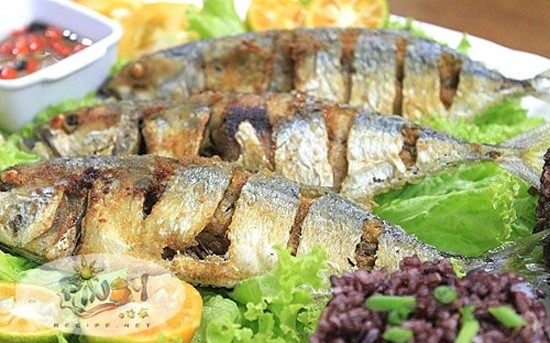

Fried Fish
What is Fried Fish?
Fried fish is any fish or shellfish that has been prepared by frying. Often, the fish is covered in batter, egg and breadcrumbs, flour, or herbs and spices before being fried and served,often with a slice of lemon.
Ingredients
3 pcs medium sized Bulao Fish or any other fish you like
2 teaspoons salt
1/2 cup Canola cooking oil
Paper towel to drain the excess oil
Instructions / How to Cook
1. Thoroughly clean the fish, remove the scales and intestines.p>
2. Slice the sides of the fish then rub salt inside the fish and outside skin.
3. Add Oil to the frying pan, and apply heat.
4. When the oil is medium hot, add the fish.
5. Fry each side in medium heat until golden brown or about 8 minutes.
6. Remove the fish from the pan and place in a plate with paper towel to drain the excess oil.
7. Transfer the Fish in a serving plate with you Sinamak or other condiments.